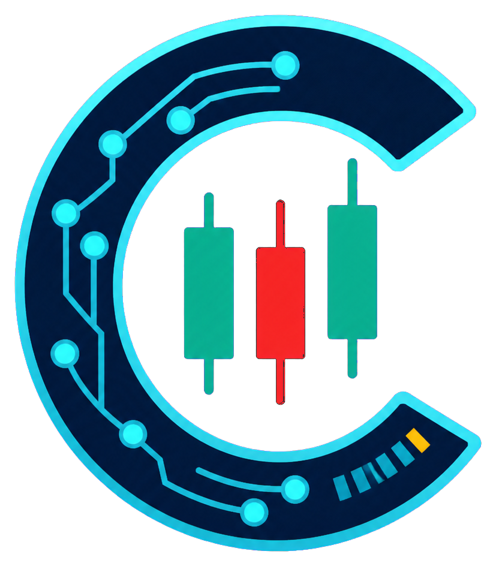

Crypto Alert
IA
Binance conectado
--:--:--
BTCUSDT
Perpetuo
1m
5m
15m
1h
4h
1D
1S
Alertas
Guardar vista
Fecha: --
Hora: --
O --
H --
L --
C --
--%
Cierre --:--
>>>
SQZ+ADX+TTM
−
+
RSI
−
+
Indicador
x
Cancelar
Guardar cambios
Alertas de precio
×
Recibe un aviso cuando el precio cruce el nivel indicado.
Activo
BTC / USDT
ETH / USDT
Condición
Cruza por encima
Cruza por debajo
Precio USDT
Frecuencia
Una vez y desactivar
En cada cruce
Crear alerta
Mis alertas
Activar notificaciones